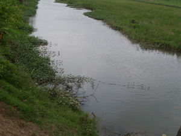

weyig 
/wɔig/
n.
“water/river”
1.
n.
water
Wrd.Gloss: water
malindit ne weyig
dirty water
Eng. water
Tag. túbig
Ceb. túbig
Ilo.: danúm
Binukid: wahig
WBM: wahig
Tigwanon: weig
Dibabawon: wehig
Ilianen: wayig
Sarangani: wayeg
Cotabato Manobo: wayeg
Tasaday: wayeg
Cagayano: waig
Tagbawa: waig
Obo: waʔig
Proto: wahig
OCM: Water and Thirst (271)
DDP: Water (1.3)
Online dict status: -
Usage level: B
2.
n.
river
Wrd.Gloss: river
Ka Simud ne weyig su mababew naan dè puun te warad kayu te uluwan wey me diyè te sahiliran.
The Simud river is no longer deep because there are no more trees at the source and at the sides of it.
Ka sika se Salug sika ka egngaranan te pahamayan ne weyig.
The Salug river is what we called big river.
Eng. river
Tag. ílog
Ceb. subà
Ilo.: karayán
OCM: Ethnogeography (823)
DDP: River (1.3.1.3)
Online dict status: -
Usage level: B
3.
v.
for burnt skin or a sore (egweweyig, migweweyig/inweweyig, weweyig, patient, eg><ø-rdpCV-) to be watery
Egweweyig ka lukè te sahing ke egkarampil te meinit.
The scab of a banana will be watery when it dries under the sun.
Eng. watery, be (of a sore or burn); ooze (of a sore or burn)
DDP: Wet (1.3.3)
Online dict status: -
Usage level: M
4.
v.
for water (egpakaweyig, nakaweyig, patient, egpAkA-) to be enough or the exact amount needed
Egpakaweyig e sika te sinubba kenad keilangan ne egpanakeru pad.
That water is enough for the cooking - there's no need to fetch water.
Eng. enough, water to be; exact amount, water to be; water to be enough; water to be the exact amount needed
Online dict status: -
Usage level: M
5.
adj.
(weyihen, -en) watery
Ka se lawa ta weyihen.
Our body is watery.
Eng. watery
DDP: Liquid (1.2.3.1), Wet (1.3.3)
Online dict status: -
Usage level: M
6.
adj.
(weyihen, -en) for someone to be fond of staying water
Weyihen sikandin.
She is fond of staying in the water.
Eng. fond
Online dict status: -
Usage level: M
7.
adj.
(weyihen, -en) talking about the place which have a lot of bodies of water
Weyihen ka Simud
Sinuda have many bodies of water..
Eng. fond
Online dict status: -
Usage level: M
8.
adj.
(maweyig, mA1-) able to produced liquid subtances
Maweyig ka lukè te sahing.
Banana's scab produces plenty of water.
Eng. liquid, able to produce
Online dict status: -
Usage level: M
Updated by: RJH,QDL,NJK,QDL,NJK,RAA,QDL,RJH
Last updated: 21/Dec/2011
"weyig" in reader "Hendei si Lita?"
"weyig" in text "Examples of Anit"
"weyig" in text "Making Lead Sinkers"
"weyig" in text "Making Lead Sinkers"
"weyig" in text "Proving Innocence I (When Accused of Theft)"
"weyig" in text "Preparing Ground Corn"
"weyig" in text "Preparing Ground Corn"
"weyig" in text "Preparing Ground Corn"
"weyig" in text "Preparing Ground Corn"
"weyig" in text "Ngalap te weyig"
"weyig" in text "Ka kalibutan"
"weyig" in text "Ka kalibutan"
"weyig" in healthbook "Mania te keilangan neg lu-luan ta ka me belad ta?"
"weyig" in healthbook "Mania te keilangan neg lu-luan ta ka me belad ta?"
"weyig" in healthbook "Mania te keilangan neg lu-luan ta ka me belad ta?"
"weyig" in healthbook "Mania te keilangan neg lu-luan ta ka me belad ta?"
"weyig" in healthbook "Mania te keilangan neg lu-luan ta ka me belad ta?"
This page last updated: 19/May/2012
Copyright © 2009-2010, Matigsalug Language Christian Association, Inc